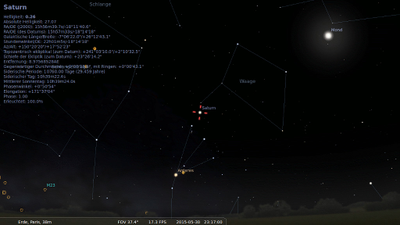

Stellarium
Dieser Artikel wurde für die folgenden Ubuntu-Versionen getestet:
Ubuntu 16.04 Xenial Xerus
Ubuntu 14.04 Trusty Tahr
Zum Verständnis dieses Artikels sind folgende Seiten hilfreich:
Mit Stellarium  lässt sich ein Planetarium innerhalb der eigenen vier Wände einrichten. Eine andere Variante ist die Installation auf einem mobilen Rechner, den man dann nachts zum Betrachten des Sternenhimmels mitnehmen kann. Es bietet ein photorealistisches „Himmelszelt“ mit 120.000 Sternen in Echtzeitdarstellung. Dabei können Ort und Zeitpunkt frei gewählt werden.
lässt sich ein Planetarium innerhalb der eigenen vier Wände einrichten. Eine andere Variante ist die Installation auf einem mobilen Rechner, den man dann nachts zum Betrachten des Sternenhimmels mitnehmen kann. Es bietet ein photorealistisches „Himmelszelt“ mit 120.000 Sternen in Echtzeitdarstellung. Dabei können Ort und Zeitpunkt frei gewählt werden.
Zu den einfachsten Funktionen zählen unter anderem:
verschiedene Einblendungen von Sternbildern
Ausblenden von Athmosphäre und Landschaft
Nachtmodus (ein Rotfilter, der den direkten Vergleich mit dem natürlichen Nachthimmel durch das gedämpfte Licht erleichtern soll)
schneller zeitlicher Vor- und Rücklauf
Suchfunktion für Himmelsobjekte (Sterne, Sternbilder, Nebel, ...)
Daneben gibt es noch verschiedenste Einstellungsmöglichkeiten (z.B. zur Ansicht von Sternbildgrenzen), vorinstallierte Erweiterungen (die man noch aktivieren kann) und unterschiedliche Okularansichten.
Das plattformübergreifende Programm läuft neben Linux auch unter Windows und Mac OS X. Auf der offiziellen Website finden sich weitere Screenshots  mit kurzen Beschreibungen, die einen Eindruck von den Möglichkeiten der Software vermitteln. Programmiert wurde Stellarium von dem Franzosen Fabien Chéreau , während viele Grafiken und Bilder von anderen Autoren respektive Künstlern stammen. Es steht unter der GNU General Public Lizenz (GPL).
mit kurzen Beschreibungen, die einen Eindruck von den Möglichkeiten der Software vermitteln. Programmiert wurde Stellarium von dem Franzosen Fabien Chéreau , während viele Grafiken und Bilder von anderen Autoren respektive Künstlern stammen. Es steht unter der GNU General Public Lizenz (GPL).
Installation¶
 Um Stellarium auf dem Rechner einzurichten, muss das folgende Paket installiert [1] werden:
stellarium (universe)
 mit apturl
mit apturl
Paketliste zum Kopieren:
sudo apt-get install stellarium
sudo aptitude install stellarium
PPA¶
Die jeweils aktuelle Version kann über ein "Personal Packages Archiv" (PPA) [2] installiert werden.
Adresszeile zum Hinzufügen des PPAs:
ppa:stellarium/stellarium-releases
Hinweis!
Zusätzliche Fremdquellen können das System gefährden.
Ein PPA unterstützt nicht zwangsläufig alle Ubuntu-Versionen. Weitere Informationen sind der  PPA-Beschreibung des Eigentümers/Teams stellarium zu entnehmen.
PPA-Beschreibung des Eigentümers/Teams stellarium zu entnehmen.
Damit Pakete aus dem PPA genutzt werden können, müssen die Paketquellen neu eingelesen werden.
Nach dem Aktualisieren der Paketquellen erfolgt die Installation wie oben angegeben.
Verwendung¶
Unter Unity kann das Programm über den Eingabe von Stellarium, bei Ubuntu-Varianten mit einem Anwendungsmenü über den Menüeintrag "Anwendungen -> Wissenschaft -> Stellarium" oder in älteren Ubuntu-Versionen via "Anwendungen -> Bildung -> Stellarium" gestartet werden.
Die Bedienung der Software ist sehr intuitiv, zumal zu allen Icons beim Überfahren mit dem Mauszeiger kurze Hilfstexte angezeigt werden. Die beiden Bedienleisten unten links werden ebenfalls erst eingeblendet, wenn man den Mauszeiger an den Rand bewegt.
Standort bestimmen¶
Die genaue Vorgangsweise hängt von der verwendeten Version von Stellarium ab.
Variante 1¶
Den eigenen Standort stellt man ein, indem man im "Standortfenster" F6 von der Liste wählt, über die Weltkarte bestimmt oder Breiten- und Längengrad anpasst. Bei den beiden letzten Möglichkeiten sollte man den ausgewählten Standort über die Schaltfläche rechts unten zur Liste hinzufügen, ansonsten werden die vorgenommenen Standorteinstellungen nicht gespeichert. Erst danach kann man den ausgewählten Ort als Vorgabe verwenden.
Die so bestimmten Orte werden in der Datei ~/.stellarium/data/user_locations.txt gespeichert und kann dort auch per Hand verändert werden.
Variante 2¶
Den eigenen Standort stellt man ein, indem man unter "Einstellungen -> Standort" entweder den eigenen Standort mit Längen- und Breitengrad eingibt oder einen Standort auf der eingeblendeten Weltkarte auswählt. Wem die Standorteingabe/-suche zu aufwendig oder ungenau ist, kann den Standort per Hand einstellen.
Dazu in einem Editor [3] die Konfigurationsdatei ~/.stellarium/config.ini öffnen und folgende Zeile suchen:
[init_location]
Nun kann man per Hand die Längen- und Breitengrade sowie den Ortsnamen eingeben:
name = Freiburg im Breisgau / Zähringen latitude = +48d01'26.00" longitude = +07d51'48.00"
Nach einem Neustart von Stellarium sollte der neue Standort eingestellt sein.
Hinweis:
Die Ortseinträge in der deutschen Wikipedia enthalten in der Übersichtstabelle die Angaben zu Längen- und Breitengrade. Oft sind diese auch für kleinere Gemeinden oder Stadtteile verfügbar.
Weitere Informationen zur Bedienung der Software finden sich im User's Guide , der auf der offiziellen Webseite in verschiedenen Sprachen (leider nicht in deutsch) betrachtet werden kann.
Fullscreen-Modus deaktivieren¶
Das Programm startet automatisch im Fullscreen-Modus. Das ist nicht unbedingt erwünscht, wenn man mit mehreren Programme gleichzeitig arbeiten möchte. Um dies zu ändern, muss man die programmeigene Konfigurationsdatei aufrufen. In der Datei ~/.stellarium/config.ini ändert man die Zeile
fullscreen = true
in
fullscreen = false
Anwendungsfenster verkleinern¶
Das Programm benutzt standardmäßig die Gesamtauflösung des Monitors. Dies ist unpraktisch, wenn man die Anwendung nicht im Fullscreen-Modus laufen lassen möchte oder aber per Dualview einen großen Desktop verwendet. Im letzten Fall erstreckt sich das Anwendungsfenster über beide Monitore oder nur über den rechten, auf dem man nur die linke Hälfte sieht, die andere Hälfte ist nicht sichtbar.
Die Auflösung ändert man in der Konfigurationsdatei ~/.stellarium/config.ini. Hier passt man die Werte in den Zeilen
screen_w = <Wert in Pixeln> screen_h = <Wert in Pixeln>
an. Die Änderungen werden beim nächsten Programmstart wirksam.
Ausblenden der Bedienleisten unterbinden¶
Wer das automatische Ein- und Ausblenden der Bedienleisten als störend empfindet, kann dies ebenfalls in der Konfigurationsdatei abstellen. Hierbei ändert man in der ~/.stellarium/config.ini folgende Variablen auf den Wert false:
auto_hide_horizontal_toolbar = false auto_hide_vertical_toolbar = false
Problembehebung¶
Falsche Landschaftsdarstellung¶
Es kann u.U. vorkommen, dass die Landschaft in Stellarium nicht korrekt angezeigt wird. Abhilfe schafft dann eine Änderung der Datei /usr/share/applications/stellarium.desktop mit Root-Rechten. Hier ändert man die Zeile mit "Exec=..." in
Exec=sh -c "LC_NUMERIC=C stellarium"
Anschließend sollte Stellarium neu gestartet und die Landschaft wieder korrekt dargestellt werden.
Stellarium startet nicht¶
Wenn Stellarium vom Terminal aus gestartet wird wenn man sich gerade im Verzeichnis ~/.stellarium befindet, kann es vorkommen, dass das Programm sofort abbricht. Es genügt dabei, in ein anderes Verzeichnis zu wechseln.
Links¶
Kometensuche mit Stellarium
- Blogbeitrag, 11/2013Celestia - alternatives Programm
Stellarium - Wikipedia
- Erstellt mit Inyoka
-
 2004 – 2017 ubuntuusers.de • Einige Rechte vorbehalten
2004 – 2017 ubuntuusers.de • Einige Rechte vorbehalten
Lizenz • Kontakt • Datenschutz • Impressum • Serverstatus -
Serverhousing gespendet von